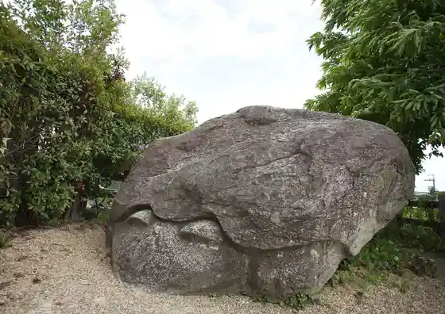
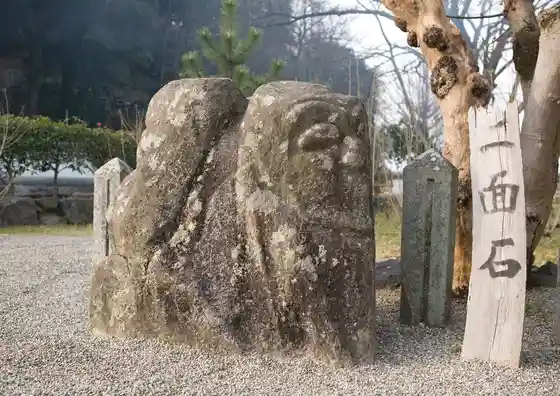
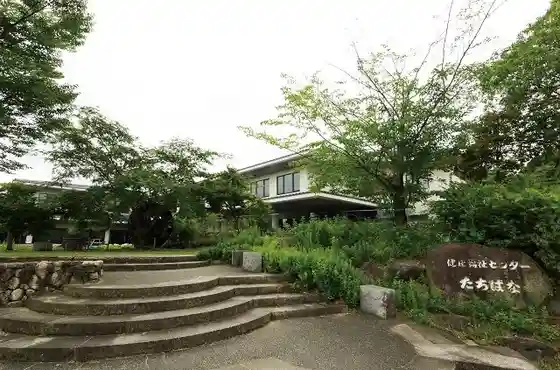
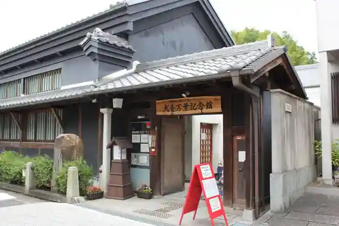

Kame Katachi Sekizo Mono
Asuka, Nara · 0744-54-3240 · Official / source link
Kameishi
Asuka, Nara · 0744-54-3240 · Official / source link

Nimen Ishi
Asuka, Nara · 0744-54-3240 · Official / source link

Kenko Fukushi Center
Asuka, Nara · 0744-54-5330 · Official / source link

Nanto Asuka Fureai Center Inukai Manyo Memorial Museum
Asuka, Nara · 0744-54-9300 · Official / source link

Kokuei Asuka Rekishi Park
Asuka, Nara · 0744-54-2441 · Official / source link
Kokuei Asuka Rekishi Park Kitora Kofun Shuhen Chiku
Asuka, Nara · 0744-54-5105 · Official / source link
Kokuei Asuka Rekishi Park Ishi Butai Chiku
Asuka, Nara · 0744-54-2441 · Official / source link
Taikan Otera Ato
Asuka, Nara · Official / source link
Tenmu Jito Tenno Ryo (Hinoki Sumi Ochi Ryo)
Asuka, Nara · 0744-54-2362 · Official / source link
Nara Bunkazai Kenkyusho Asuka Museum
Asuka, Nara · 0744-54-3561 · Official / source link
Nara Prefectural Manyo Bunka Kan
Asuka, Nara · 0744-54-1852 · Official / source link
Oka Tera
Asuka, Nara · 0744-54-2007 · Official / source link
Kawara Jiseki Kofuku Tera
Asuka, Nara · 0744-54-2043 · Official / source link
Tachibana Tera
Asuka, Nara · 0744-54-2026 · Official / source link
Hinoki Kuma Jiseki (O Bi A Kokorozashi Shrine)
Asuka, Nara · Official / source link
Kengyu Ko Tsuka Burial Mound Koshizuka Mikado Burial Mound
Asuka, Nara · 0744-54-5600 · Official / source link
Saruishi
Asuka, Nara · 0744-54-3240 · Official / source link
Amakashi Oka
Asuka, Nara · 0744-54-2441 · Official / source link
Ishi Butai Burial Mound
Asuka, Nara · 0744-54-3240 · Official / source link
Soga Iruka Kubizuka
Asuka, Nara · 0744-54-3240 · Official / source link
Sakafune Ishi
Asuka, Nara · 0744-54-3240 · Official / source link
Asukanimasu Shrine
Asuka, Nara · 0744-54-2071 · Official / source link
Asuka Kyuseki
Asuka, Nara · 0744-54-3240 · Official / source link
Asuka Tera
Asuka, Nara · 0744-54-2126 · Official / source link
Asuka Mizuochi Iseki
Asuka, Nara · 0744-54-2001 · Official / source link
Takamatsu Tsuka Burial Mound
Asuka, Nara · 0744-54-3340 · Official / source link
Takamatsu Tsuka Hekiga Kan
Asuka, Nara · 0744-54-3340 · Official / source link
Oni no So, Oni no Setchin
Asuka, Nara · 0744-54-3240 · Official / source link